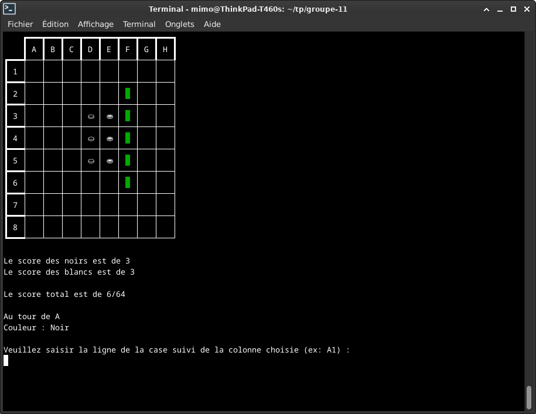
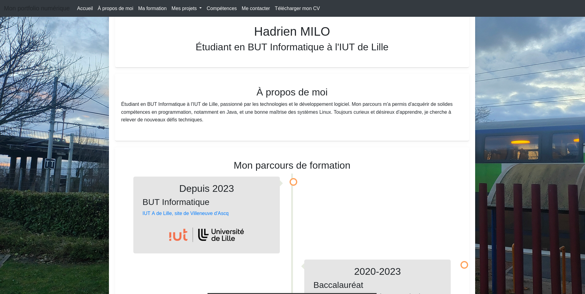
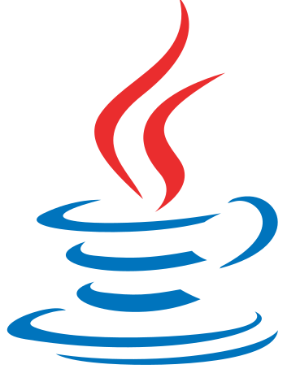

Hadrien MILO
Étudiant en BUT Informatique à l'IUT de Lille
À propos de moi
Étudiant en BUT Informatique à l'IUT de Lille, passionné par les technologies et le développement logiciel. Mon parcours m'a permis d'acquérir de solides compétences en programmation, notamment en Java, et une bonne maîtrise des systèmes Linux. Toujours curieux et désireux d'apprendre, je cherche à relever de nouveaux défis techniques. Je suis actuellement à la recherche d'un stage de 10 semaines, à partir du 1er avril 2025 afin d'enrichir mes compétences et mener à bien ma formation.
Mon parcours de formation
2020-2023
Baccalauréat
Série générale, spécialités NSI et Physique-Chimie
Obtenu avec mention Assez-bien

Décembre 2019
Stage d'observation de 1 semaine
Premier contact avec le monde du travail

Mes projets scolaires et personnels

Jeu ludopédaogique
Développement d'un jeu en Java, sans l'aspect orienté objet, au semestre 1
Voir le projet

Othello
Développement au début du S2, d'un jeu en Java, en groupe et dans un cadre de travail agile
Voir le projet

Portfolio numérique
Ce site web, permettant de mieux valoriser mes compétences et mon travail personnel et scolaire
Voir le projetCompétences techniques

Java
C

Python

SQL

HTML5
CSS3
Systèmes Linux
Compétences non-informatiques
Gestion de projets:
- Cadre de travail "agile"
- Utilisation de Git pour la gestion de versions et la collaboration
Compétences linguistiques:
- Maitrise de l'anglais (niveau C1 au BAC, emploi quotidien à l'écrit, en ligne...)
- Quelques notions en espagnol (niveau B1+ au BAC)